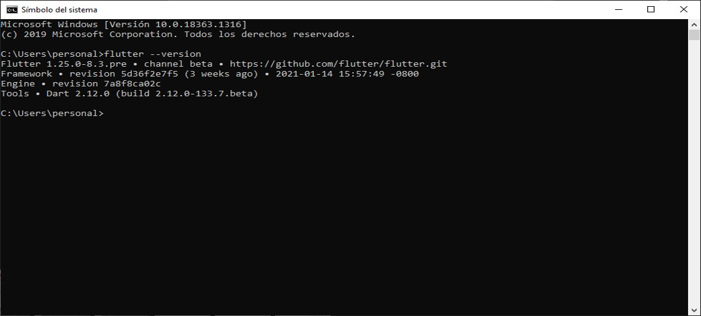

Flutter
04 de Febrero del 2021
¿Qué es Flutter?
Es un framework para desarrollar aplicaciones para diferentes plataformas elaborado por Google y publicado por primera vez como proyecto de código abierto a finales de 2018. Este kit de desarrollo ofrece un gran número de bibliotecas para elementos estándar de la interfaz de usuario de Android y iOS, pero también sirve para desarrollar aplicaciones web de escritorio. Las aplicaciones desarrolladas con Flutter tienen el aspecto normal de las aplicaciones en cada sistema y se comportan como se espera de ellas en todos ellos sin que los programadores tengan que prestar atención a las particularidades de cada sistema.
Desarrollo rápido
Da vida a tu aplicación en milisegundos con Stateful Hot Reload. Utilice un amplio conjunto de widgets totalmente personalizables para crear interfaces nativas en minutos.
UI expresiva y flexible
Envíe funciones rápidamente con un enfoque en las experiencias nativas del usuario final. La arquitectura en capas permite una personalización completa, lo que da como resultado una representación increíblemente rápida y diseños expresivos y flexibles.
Rendimiento Nativo
Los widgets de Flutter incorporan todas las diferencias críticas de la plataforma, como el desplazamiento, la navegación, los iconos y las fuentes, y su código de Flutter se compila en el código de máquina ARM nativo utilizando los compiladores nativos de Dart .
¿Para qué se usa Flutter?
Flutter se usa principalmente para desarrollar aplicaciones de Android y iOS sin necesidad de escribir un código base propio para cada uno de estos sistemas, completamente diferentes entre sí. En este contexto, las aplicaciones móviles se ejecutan como auténticas aplicaciones nativas en los dispositivos. Antes de su publicación, se compilan para la plataforma correspondiente, de manera que no necesitan un módulo runtime ni un navegador. Sobre la misma base de código, se pueden crear aplicaciones web para navegadores y programas nativos para Windows, Linux y macOS.
Google usa Flutter, por ejemplo, para distintos módulos de Google Assistant y la interfaz de usuario de Google Home Hub. También hay distintos proveedores de eCommerce, como eBay, Groupon o el Alibaba Group, que usan Flutter para que sus aplicaciones web y móviles tengan un aspecto y carácter uniformes.
¿Qué tipo de aplicaciones puedo construir con Flutter?
¿Qué lenguaje de programación usa Flutter?
El SDK (kit de desarrollo de software) de Flutter se basa en el lenguaje de programación Dart, también desarrollado por Google con el fin de convertirse en un sucesor del clásico JavaScript que, igual que este, se ejecuta directamente en el navegador. En un servidor, los programas Dart se pueden ejecutar de forma directa; en un navegador, se ejecutan en JavaScript mediante el compilador Dart2js. Las aplicaciones para la nueva plataforma Fucsia de Google se desarrollan con Dart, un lenguaje que a nivel estructural se parece mucho a los lenguajes orientados a objetos como Java o C#.
Desarrollo
La recarga en caliente de Flutter te ayuda a experimentar, crear interfaces de usuario, agregar funciones y corregir errores de forma rápida y sencilla. Experimente tiempos de recarga inferiores a un segundo sin perder el estado en emuladores, simuladores y hardware.
Flutter y Dart
Los programadores de Google y de otros lugares usan Dart para crear aplicaciones de misión crítica de alta calidad para IOS, Android y la web. Con características destinadas al lado del cliente, Dart es ideal para aplicaciones móviles y web.
Se ajustaba a la forma en que estaban construyendo las interfaces de usuario.
Lista rápida de las características de Dart que juntas lo hacen indispensable para Flutter:
Hot Reload
Inserta código actualizado dentro de la máquina virtual de Dart que se está ejecutando. Stateful: El estado de la app se mantiene después de la actualización, Sirve para iterar con rapidez en una pantalla que se encuentra en un nivel de navegación profundo dentro de la app.
Índice del widget Flutter
Los widgets de Flutter son construidos usando un moderno framework que toma inspiración de React. La idea central es que construyas tu UI de widgets. Los Widgets describen cómo debería ser su vista, dada su configuración y estado actuales. Cuando el estado de un widget cambia, el widget reconstruye su descripción, que el framework difiere de la descripción anterior para determinar los cambios mínimos necesarios en el árbol de renderizado subyacente para la transición de un estado al siguiente
Todo es un widget: el principio básico de Flutter
La estrategia de Flutter, todo es un widget, sigue las bases de la programación orientada a objetos hasta la interfaz de usuario: la interfaz del programa consta de diferentes widgets que pueden estar anidados entre ellos. Cada botón y texto mostrado es un widget. Estos cuentan con diferentes propiedades que se pueden modificar.
Pueden interactuar entre sí y reaccionar a cambios de estado externos mediante sus funciones integradas.
Todos los elementos importantes de la interfaz de usuario incluyen widgets que se corresponden con los diseños de Android y iOS o las aplicaciones web convencionales. Si se desea, estos widgets se pueden ampliar con funciones adicionales o se pueden crear widgets propios que se pueden combinar fácilmente con los ya existentes.
En comparación con otros SDK, los widgets ofrecen una mayor flexibilidad, pero cuentan con la desventaja de que forman parte del código fuente del programa, por lo que el código queda muy anidado y puede resultar confuso.
Algunos Widget
Flutter: ejemplos sencillos
Para facilitar el arranque, los desarrolladores aportan numerosos ejemplos de Flutter. Un proyecto tan simple como “Hola mundo” ya permite observar la estructura básica de un programa con un widget y una sencilla función void Main() que inicia el programa.
En un smartphone o una simulación, el programa muestra, en la parte superior, la barra de título “Welcome to Flutter” del elemento AppBar() del widget. En el espacio de pantalla vacío que hay debajo y que en Flutter se denomina como body, aparece, en este caso, el texto “Hello World” en posición centrada.
Otros ejemplos interactivos muestran las aplicaciones de Flutter en el navegador junto con el código fuente Dart. Cuando se modifica, se puede observar el efecto en la aplicación en directo.

Biblioteca de animaciones
Esta biblioteca proporciona bloques de construcción básicos para implementar animaciones en Flutter. Otras capas del marco utilizan estos componentes básicos para proporcionar soporte de animación avanzado para aplicaciones. Por ejemplo, la biblioteca de widgets incluye ImplicitlyAnimatedWidget sy AnimatedWidget s que facilitan la animación de ciertas propiedades de un Widget . Si esos widgets animados no son suficientes para un caso de uso dado, los bloques de construcción básicos proporcionados por esta biblioteca se pueden usar para implementar efectos animados personalizados
¿Qué hace falta para programar con Flutter?
Todas las bibliotecas y herramientas de líneas de comando importantes para el desarrollo de software están en el SDK Flutter, el kit de desarrollo de software que se puede descargar gratuitamente en la página web oficial. Aunque no dispone de un entorno gráfico de desarrollo integrado propio, para escribir el código fuente puedes usar cualquier editor de texto. Google recomienda instalar Android Studio para que la programación sea más cómoda. Flutter proporciona plugins para Android Studio para integrar las bibliotecas de manera más sencilla y permitir la sintaxis resaltada en el editor.
Herramientas
Dart proporciona una serie de herramienta a los desarrolladores que le permiten optimizar el desarrollo tales como:
Se puede agregar Flutter a la aplicaciones existentes, tanto para Android como para iOS, lo que nos permite beneficiarnos de Flutter en cualquier estadio del desarrollo.
Existe una creciente lista de organizaciones que crean hermosas aplicaciones con Flutter, entre ellas podemos destacar:
xiste una extensa comunidad para facilitar el aprendizaje y soporte a los desarrolladores. El uso de Flutter ha despegado, con más de 250.000 desarrolladores en todo el mundo. Flutter se encuentra actualmente en el top 20 de los repositorios de software activos en Github.
Documentos API- Importar una biblioteca
Bibliotecas de marco
Las bibliotecas en la sección "Bibliotecas" a continuación (o en la navegación de la izquierda) son parte del marco principal de Flutter y se importan usando 'package:flutter/library.dart', así:
Bibliotecas de Dart
Las bibliotecas en la sección "Dart" existen en el dart:espacio de nombres y se importan usando 'dart:library', así:
Excepto por 'dart:core', debe importar una biblioteca de Dart antes de poder usarla.
Bibliotecas de apoyo
Las bibliotecas de otras secciones son bibliotecas compatibles que se incluyen con Flutter. Están organizados por paquete y se importan usando 'package:
Herramientas Eficientes
| $flutter doctor | Revisa el entorno y muestra un reporte en la ventan de terminal. |
| $flutter upgrade | Actualiza tanto el SDK de flutter así como los otros paquetes. |
| $flutter packages get | Revisa el entorno y muestra un reporte. |
| $flutter packages upgrade | Buscará la versión más reciente disponible del paquete. |
| $flutter format | Automáticamente formatea el código al estilo de flutter. |
| $flutter analyze | Analiza el código y ayuda a encontrar errores. |
Optimización del tiempo de carga

El tiempo de carga es uno de los elementos a los que hay que prestar especial interés a la hora de desarrollar una app. Esto ocurre porque cuando una app tarda demasiado en mostrar el contenido se estará aumentando la probabilidad de que un usuario abandone la plataforma.
Por ello, Fluter ha tenido en cuenta la optimización de carga de las app. A través de este kit los tiempo de carga se disminuyen y en un tiempo inferior al segundo es posible visualizar y hacer uso de la app, independientemente si el soporte es Android o iOS.
Instalación
Nos dirigimos a la página de flutter y hacemos clic en get started.
Luego nos llevará a que escojamos para que sistema operativo necesitamos en este caso windows10.

Podemos observar los requisitos que necesitamos

Instalar Github

Una vez instalado github iniciamos la descarga esto cuando se descomprime llega a pesar 1 GB, hay que extraer todo el archivo y nos recomienda que instalemos lo que es flutter en el disco local c en una carpeta que llamaremos sr.
Podemos observar que hemos creado la carpeta src y dentro de ella colocaremos la carpeta de flutter. lo instalamos aquí ya que no nos piden que los instalemos en program files porque vamos a utilizar varios privilegios por eso es que nos recomiendan que lo instalemos donde lo hicimos.

Editamos nuestra variables de entorno y agregamos el path de donde colocamos la carpeta de flutter.
Podemos observar que hemos creado la carpeta src y dentro de ella colocaremos la carpeta de flutter. lo instalamos aquí ya que no nos piden que los instalemos en program files porque vamos a utilizar varios privilegios por eso es que nos recomiendan que lo instalemos donde lo hicimos
Nos dirigimos al cmd e ingresamos el comando flutter --version este nos permite ver que versión tenemos es preferible descargarse la versión recomendada en la página de flutter

Seguimos con la guía que nosotros tenemos y lo siguiente es correr flutter doctor que es un comando que nos va a ayudar a nosotros a poder determinar si todo esta correctamente instalado en nuestra computadora si lo ejecutamos
Nos dirigimos nuevamente al cmd y mandamos a ejecutar el comando flutter doctor lo que va hacer es revisar si el equipo tiene todo lo necesario para trabajar con flutter.
Lo siguiente es instalar android studio.

Una vez descargado Android Studio vamos a configuraciones e instalamos los plugins de Dart y flutter y damos en ok.

Una vez instalados podremos crear un nuevo proyecto en flutter.
Ventajas y desventajas de Flutter
Cada SDK y lenguaje de programación tiene sus ventajas y sus inconvenientes. Pero, haciendo balance, se podría decir que las ventajas de Flutter frente a otros sistemas parecidos pesan mucho más que las desventajas.
Desventajas de Flutter

Conclusión

En nuestra opinión, Flutter tiene muchas más ventajas para los negocios y para los equipos de desarrollo que riesgos. Es una gran oportunidad para crear aplicaciones móviles hermosas, de alto rendimiento y sobresalientes que se ajusten a sus necesidades y requisitos personalizados. Vale la pena considerar Flutter, especialmente si quieres una aplicación para iOS y Android.